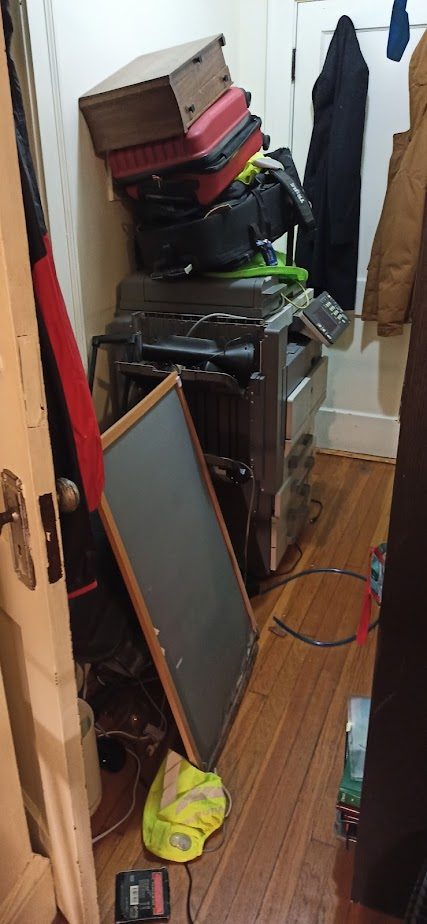
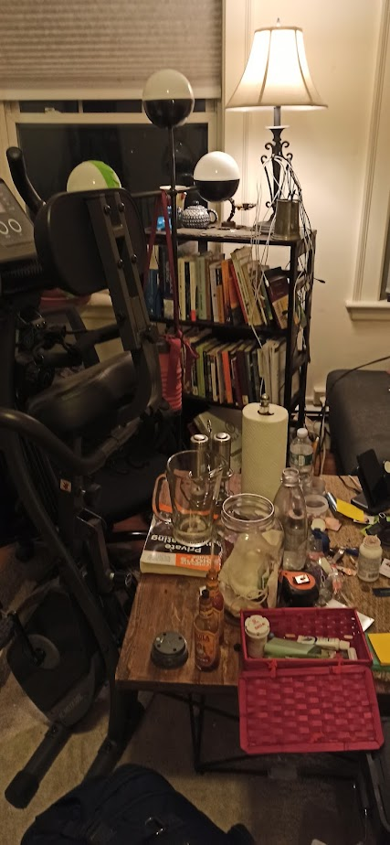
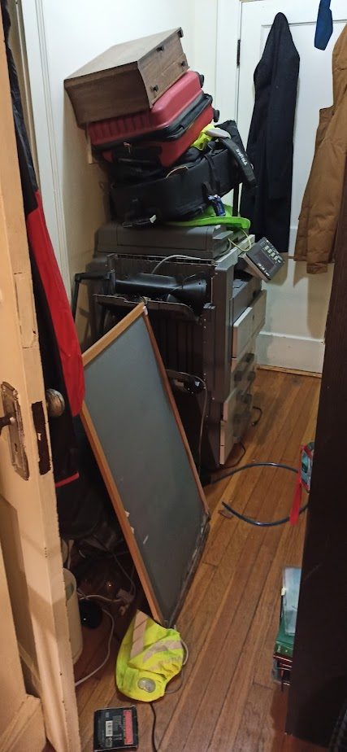
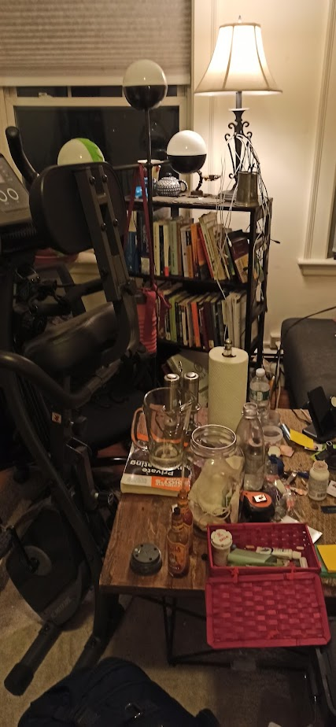

What if I slept with a serial killer?


 



This is a continuation of "What if I was homeless for 100 hours".
I drank a lot of water last night while chatting with the man in his 50s so I woke up at 5am to go to the restroom. When I returned, the door to the banana lounge was locked with my backpack inside. The student's warning immediately popped into my mind and I feared that the man may have been a thief who took off with my belongings and locked the door. I patrolled the area for about 20 minutes before seeing a cleaner coming out of the lounge. I rushed over and made brief small talks as he held the door open for me to enter. After enjoying a cup of coffee in the lounge, I gathered my belongings and starts my 4th day in Boston on 4 hours of sleep.
As it was still early in the morning, I set out on a mini challenge to take the Boston 'T' Subway to the end of the line, walk straight in one direction for an hour, and see where I end up. Aside from a wonderful walk in the cool cloudy weather, I did not encounter much in this remote area except for a few stores selling delicious and cheap cookies.
On the subway ride back to the gaming convention center, I met a novice cosplayer wearing a very gruesome homemade killer rabbit outfit and I chatted with her about her craft, animatedly going over each skillful details from how she made her mask to the rustic shavings on her axe and the stitches and drips of bloods on her gory jeans. Little did I know that in a little over 12 hours I would experience the most bloodcurdling moment of my 100 hour homelessness challenge.
I spent the rest of Saturday at the convention center attending event panels and playing board games until 9pm. The moment I stepped outside, the cool weather from morning was no more, replaced with a dark and windy rainstorm. The wind was so intense that when I tried to open my umbrella, the long rib immediately snapped back to the closed position, refusing to provide cover for me amidst the pouring rain. As I stood there in the storm trying to quickly shove the broken umbrella back into my bag to free my hand, the backpack zipper fell apart. Worst yet, it was 9pm on a Saturday. "What if I went back to MIT, the door is shut tight, and there is no students for me to tailgate into the building because it is Spring Break weekend and all the students went home?"
The triple jeopardy of a heavy rainstorm, a broken umbrella, and fear that I would be stuck outside the walls of MIT in the rain overwhelmed my mind. And so with the mental state of a tenant evicted from his home without warming combined with the adrenaline fueled by fear of realized homelessness, I marched inside the convention center, eyes of a hawk looking for a hiding spot. I approached 3 different groups of employees and convention attendees who unanimously and without remorse rejected the desperate 20-year-old of a place to sleep.
Left with no alternatives, I picked up my phone and dialed the chatty man I met last night in the Banana Lounge. He answered the phone and gave me his apartment address which was about 40 minutes away by public transport. I took the subway half-way and a bus for the remaining duration. While on the bus, anticipation and terror fills my mind. I have only talked with him for 3 hours, "Am I about to trust this stranger with my wellbeing while I sleep?" I hastily went online to dig up as much information as I could find about the stranger. He did not have a major online presence and what little I did find could have easily been a fabricated story. What was even more chilling, his rare last name is the same as the Jigsaw Killer.
"What if I went to his apartment, close my eye, and could never wake up?" I am in a state with no friends or family, and not a single person knew my whereabouts aside from the chatty stranger. I was so afraid that as I was sitting on the bus going to his address, I typed up a goodbye note to my family and hit sent to a distance friend. My rationale for sending the note to a distance friend is that he would not be able to stop me, and if I did not respond to him the next day, he would be able to the number I gave him so at least my family could contact the authorities to retrieve my body. He tried several times to stop me, but "courage is being afraid and doing it anyway". I wasn't sure at the time if it was courage or stupidity masked by adrenaline, but my gut feeling told me to trust my research and my judgement of character. I stepped off the bus, walked down the dimly lit road, approached the apartment entrance, and gave the stranger a call.
It was a very large apartment that had about 50 rooms equipped with individual bathroom and kitchen but as the stranger guided me through the building to his room, I did not see or hear any other tenant (maybe because it was 11pm and everyone was deep asleep). He led me to his door with a sign that had characters I could not recognize as if he was part of some secretive cult. I stayed silent, on high alert throughout his apartment tour.
We chatted for the next hour, my answers still reserved and skeptical. He told me about the poverty-stricken condition of his dimly-lit neighborhood and how there were many people homeless around the city. The stranger rambled on about a nearby house that burned down last week, people getting food poisoning from dirty water, and his own struggles with painkillers as an elderly man living alone. "It's getting late so I need to get some sleep, I'll show you the painkillers tomorrow" said the stranger. "Such morbid subjects" I thought to myself, still keeping my responses brief to his rambling. He offered me a glass of water from the tap, I accepted the glass politely, took a sip, and excused myself to the restroom. Inside the restroom, cluttered like the living room, were letters from an organization to help the impoverished population in Boston. I stepped outside of the restroom, the stranger were preparing for bed. Saying goodnight, Kramer went inside his bedroom, and then I heard a familiar click.
I went to investigate the source of the noise, and confirmed that the man has locked his bedroom door. It seems that he was also watchful of the stranger sitting on the other side of the wall. I observed my surrounding one last time, cautiously walking around the living room and looking for any signs that the man was part of a gang, any sign to confirm the sinking feeling that I might be kidnapped or killed tonight. But all I find were philosophical and historical books about social and economic issues and an ID of a man who had a very eventful life. I dozed off to sleep.
The next morning I woke up once again at 5am without an alarm. Thankful for still being alive, I hastily gathered my belongings and exited the apartment. Immediately, I saw firsthand many of what Kramer had said the previous night. There were two drug-addicted vagrants sitting right outside of the train station, calling out at me as I approached the station door. As I stepped closer, the door was locked and there was still 45 minutes before the station opens for the day. I kept my distance from the vagrants and spotted a bulky clean-shaven man jogging down toward the station. I stepped toward his direction for safety. David was a 51-year-old divorced monk who practiced linguistics, Judo, and Hindu mantras. People from Somerville were very talkative and within 1 hour I had learned that David used to be physically tortured by polices from Belarus and that he think people on their phones, beggars, and prostitutes, are literal demons walking among us (I later met a junkie prostitute on my way to downtown).
The moral of this adventure? Why did I feel safer at the prospect of sleeping with a college student than a man in his 50s? Why did the monk feel safe talking with me while blatantly calling people within 30 feet of us demons? We all have different life experiences, and sometime we are afraid to approach those who experienced life a different way from us, but rather than focus on the difference, we should look at how much we are alike. Those are the things that made us human.